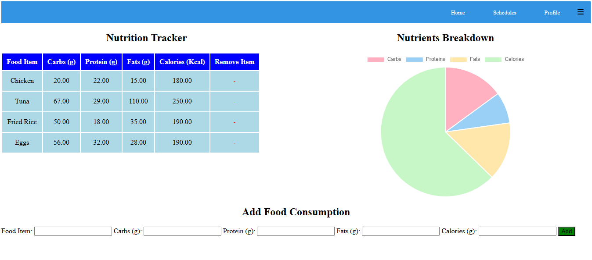

My Fitness
"My Fitness" is an intuitive fitness tracking application designed to help users achieve their health and wellness goals. The app allows users to monitor daily fitness activities, set personalized goals, and adopt healthier lifestyles. Users can update their profiles with personal details such as height, weight, and calorie preferences to receive tailored recommendations and insights.
Technologies Used: JavaScript: For dynamic and interactive front-end features. PHP: For server-side scripting and user authentication. MySQL: For database management and storing user data. HTML: For structuring the web application. CSS: For styling and layout of the application.